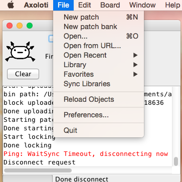

Hello im brand new with axoloti and I can't start the patcher. I download the runtime and then installed it and then download the app and doble click the app package and installed into applications folder (I just follow the instructions on installing post).
all looks good and in the right folder to me. BUT when I open the APP the only window I can see its the "console" no patcher and no file or preference or any option just AXOLOTI appears at the top bar.
console doesn't advice any ERROR message(connected its on red)
im running Mac OS 10.13.
what can't I do to open the patcher?
im pretty sure there is something really obvious im missing but can't find the problem.
(Please excuse my poor English ,,I hope you can understand it).
Getting started...patcher won't start up right
DrGwon
#1
jaffasplaffa
#2
You don't see this, the drop down menues? "File" menu for example:

If you do, push new patch and you are good to go 
You probably also would like to use the community library, but we should probably get the patcher running first
DrGwon
#7
I think I follow the user guide... I read a lot today,,, I have spend the whole afternoon installing and uninstalling and reading the forum before I decided to make a post... I think im about to lose my mind. XD
I can't hardly way to start patching!
jaffasplaffa
#8
Yeah understandable.
Unfortunately I don't know much about firmware and the program itself. I think Technobear, who I tagged above, is probably your best option.
When you start up Axoloti, is anything printed to the console? If there is, you could post it here, cause anyone who can help you will probably need that information, if any.
DrGwon
#9
that´s what´s on my console:
Axoloti version : 1.0.12-2-0-g7975cc87 build time : 09/04/2018 13:15:31 GMT
Link to firmware CRC E95BAC96
Status: factory (1.0.12,anon) : OK ( 1.0.12,clean )
Status : home : OK
Status: community (1.0.12,anon) : OK ( 1.0.12,clean )
USB device found
connected
Authentic Axoloti Core
search path : /Users/steve/Documents/axoloti/axoloti-factory/objects
Firmware version: 1.0.0.1, crc=0xE95BAC96, entrypoint=0x20011000
search path : /Users/steve/Documents/axoloti/objects
search path : /Users/steve/Documents/axoloti/axoloti-contrib/objects
finished loading objects
I try it with and without sd card ... I don't think its has to do with that but I tried everything I can think of.
lokki
#10
this all looks good. do you have any extensions installed on osx that could make the menu disappear from the top? what happens if you press (applekey) and n? does a new patcher window pop up?
DrGwon
#11
Yes! A patcher window pop up!!  thank you!! So I stop fighting with the installation and start fighting with my MacOS preferences. I feel dumb and happy at the same time(like Kurt Kubain) XD.... Thanks you very much!!
thank you!! So I stop fighting with the installation and start fighting with my MacOS preferences. I feel dumb and happy at the same time(like Kurt Kubain) XD.... Thanks you very much!!
DrGwon
#13
I still have to figure out. I'm at work right now. Tomorrow I will have a go on it and post the solution...if I find any of course.
lokki
#14
that is great! i hope you find the cause of this...
does the menu appear once you have a patcher window open? does saving work (applekey)-s?
DrGwon
#15
No. The menu didn't appear but saving shortkey works well.
I can't find any option in MacOS preferences that it's causing the problem... The others programs (max4live .. Ableton live... Traktor. Etc...) Are working without any problem.
I still fighting the beast!!
Any suggestions?
If I find something I will post it. Thanks!
DrGwon
#16
its something I can't understand... the menu bar its up there but only axoloti appears... no "FILE" option or any other is there.
I can hide the menu bar from macOS preferences but the problem its not that the menu its not there,,, the problem its the menu does not have the options there. 
{kind=link}
DrGwon
#18
Can JAVA be the "problem"?
im running java 8 (compilation 1.8.0)...
is it the right version? its there any option I have to change?
the beast its powerful and Im running out of bullets 
DrGwon
#20
Ok! I finally find it!!
I have to change my Mac main language preferences.
It was on Spanish... Now it's on English.
Everything works perfect now!!
Thank you everybody for your help!